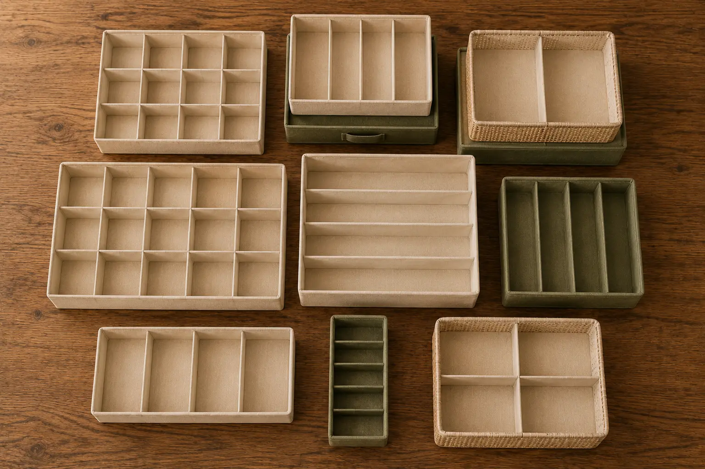

Органайзер для белья часто покупают по фотографии: ровные ячейки, спокойный цвет, обещание порядка. Кажется, что достаточно поставить его в комод, иии... носки, трусы, колготки и бельё обретут своё место и больше не будут перемешиваться.
Но дома всё может оказаться иначе: ящик ниже, чем казалось, секции слишком мелкие, стенки не держат форму, а набор из нескольких органайзеров не складывается в ящике так красиво, как на картинке.
Хороший органайзер должен подходить не вообще, а именно Вашему ящику, Вашим вещам и тому, как Вы пользуетесь комодом каждый день.
01 — КороткоКак выбрать органайзер для белья в комод
Перед покупкой проверьте три вещи. Если органайзер красивый, но не подходит хотя бы по одному из этих пунктов, удобного порядка в ящике всё равно не будет.
Проверить перед покупкой
- Размер ящика. Измерьте внутреннюю ширину, глубину и полезную высоту до закрытия.
- Тип вещей. Для носков, трусов, бюстгальтеров, маек и колготок нужны разные секции.
- Конструкцию органайзера. Он должен держать форму, не вставать впритык и не заставлять утрамбовывать вещи.
02 — ВидыКакие бывают органайзеры для белья
Органайзеры отличаются не только цветом и количеством отделений. Главное — их конструкция.
Органайзеры с ячейками подходят для носков, трусов, детского белья и небольших аксессуаров. Здесь важно смотреть не на количество ячеек, а на их размер. Если вещь приходится сжимать, секция слишком маленькая.
Органайзеры для бюстгальтеров должны быть свободнее. Бюстгальтеры лучше не хранить в мелких ячейках: чашки могут деформироваться, а доставать вещи будет неудобно. Подойдут длинные секции, открытые короба или отдельная зона без сильного сжатия.
Открытые короба и лотки хороши для маек, футболок, мягких топов, пижам и домашней одежды. В них удобно хранить вещи вертикально или аккуратной стопкой. Но для носков и мелких аксессуаров открытый короб без разделения обычно неудобен.
Разделители для ящиков комода помогают настроить секции под конкретный размер. Это хороший вариант, если ящик нестандартный или Вы хотите сами решить, сколько места дать каждой категории.
Складные тканевые органайзеры выглядят мягко и аккуратно, но перед покупкой важно проверить, есть ли дно, плотные стенки и устойчивые перегородки. Если органайзер слишком мягкий, секции быстро сомнутся.
Пластиковые органайзеры и лотки лучше держат форму и легко протираются, но требуют точного размера. Если пластиковый лоток не подошёл по ширине или глубине, подстроить его почти невозможно.

03 — СравнениеКакой органайзер выбрать под Вашу задачу
Короткая таблица-подсказка: где формат работает, где скорее подведёт и что важно проверить именно для него.
| Формат | Когда подходит | Когда не подходит | Что проверить |
|---|---|---|---|
| Органайзер с ячейками | ПодходитНоски, трусы, детское бельё, мелкие аксессуары | Не подходитБюстгальтеры, майки, объёмная одежда | ГлавноеРазмер одной ячейки |
| Органайзер для бюстгальтеров | ПодходитБюстгальтеры, бралетты, мягкие топы | Не подходитНизкий ящик, смешанное хранение | ГлавноеВысоту ящика |
| Открытый короб или лоток | ПодходитМайки, футболки, пижамы, домашняя одежда | Не подходитМелкие вещи без разделения | ГлавноеНе будут ли вещи перемешиваться |
| Разделители для ящиков | ПодходитНестандартный ящик, смешанное хранение | Не подходитЕсли зоны ещё не понятны | ГлавноеУстойчивость и ширину секций |
| Складной тканевый органайзер | ПодходитБельё, носки, мягкие вещи | Не подходитЕсли стенки не держат форму | ГлавноеДно и плотность перегородок |
| Пластиковый органайзер | ПодходитАксессуары, мелочи, жёсткие секции | Не подходитНестандартный размер ящика | ГлавноеТочное попадание по размеру |
→ Таблицу можно прокрутить вбок
04 — КарточкаЧто проверить в карточке товара
Перед покупкой смотрите не только на красивые фото. Пройдитесь по списку — он отсекает большинство неподходящих органайзеров ещё до заказа.
В карточке товара
- Указаны ли точные размеры
- Есть ли высота
- Понятен ли размер одной ячейки
- Видно ли дно
- Похожи ли стенки на плотные
- Есть ли фото с реальными вещами
- Сколько элементов в наборе и нужны ли Вам все они
В отзывах ищите не только «красивый» и «качественный», а фразы про реальное использование:
Полезные сигналы в отзывах
Такие отзывы часто полезнее общего рейтинга: они показывают, где органайзер может не подойти именно Вашему ящику.
05 — ОшибкиЧастые ошибки при выборе органайзера
-
01
Выбрать по фото
Красивый порядок в карточке товара не означает, что органайзер подойдёт Вашему комоду.
-
02
Не проверить высоту
Особенно если в ящике будут бюстгальтеры, плотные носки или объёмные вещи.
-
03
Взять слишком много мелких ячеек
Для носков это может быть удобно, а для белья, топов и колготок — точно нет.
-
04
Купить мягкий органайзер для вещей, которым нужна форма
Если стенки не держатся, секции быстро превращаются в общий мягкий короб.
-
05
Не подумать, как несколько органайзеров встанут вместе
Важно не только «поместится ли один», но и как соберётся весь ящик.
-
06
Решить одним органайзером слишком разные задачи
Носки, бюстгальтеры, майки и аксессуары редко удобно хранить в одинаковых секциях.
06 — СервисКогда сначала нужна схема, а потом органайзеры
Если Вы выбираете один органайзер для одного типа вещей, можно справиться вручную: измерить ящик, проверить карточку и заказать подходящий размер.
Но если Вы хотите организовать комплексный ящик — бельё, носки, колготки, бюстгальтеры, аксессуары — прежде всего нужно продумать, как всё встанет вместе. Один органайзер может подходить идеально, а несколько рядом уже не помещаться или оставлять неудобные пустоты.
Для этого мы и придумали «Уместно».
Вы указываете размеры ящика и вещи, которые хотите хранить, — а сервис показывает схему: какие зоны нужны, что где разместить и как разложить вещи. После этого выбирать органайзеры, короба или разделители проще: Вы уже понимаете, что именно ищете.
07 — ИтогЧто в итоге
Органайзер для белья в комод стоит выбирать не по красивой фотографии, а по реальной задаче: под Ваш ящик, Ваши вещи и то, как Вы пользуетесь комодом каждый день.
Хороший органайзер не просто занимает место в ящике. Прежде всего он помогает вещам оставаться на своих местах и делает хранение удобнее каждый день.